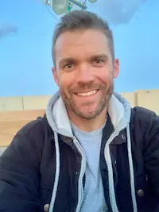

Dallin G. Patterson | WDD 130
Hello! My name is Dallin Patterson and I am from Mesa, Arizona. Currently I live in the Oklahoma City metro area. I enjoy spending time with my family, learning new things, playing sports, being outdoors when it's cool out, and seeing different areas of the world. I am in the California Air National Guard while my civilian job is for a military contractor. I do the same thing for both entities. My Guard job allows me opportunities to see my country and serve locally, while my civilian job takes me around the world to serve military members and other nationalities. I love being able to find fellow members of the Church of Jesus Christ of Latter-day Saints in all parts of the world.